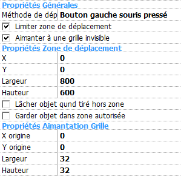

Ce mouvement vous permet de tirer vos objets � la souris. Le d�placement d'un objet ayant ce mouvement peut �tre limit� � une zone donn�e et align� sur une grille. Vous pouvez s�lectionner diverses options comme la m�thode de d�placement de l'objet. Les utilisateurs avanc�s peuvent changer les options et contr�ler le mouvement via l'�diteur d'�v�nements.
Par d�faut, l'objet est tir� classiquement en gardant le bouton gauche de la souris appuy�.
Si vous d�sirez changer le bouton et la m�thode utilis�e pour tirer l'objet, ou restreindre le d�placement, s�lectionnez les propri�t�s ad�quates d�crites ci-dessous. L'objet est toujours tir� gr�ce � un clic souris. Si l'objet a l'option "collisions fines", alors l'utilisateur doit cliquer sur une partie non transparente de l'objet.
Note: si l'utilisateur a choisi d'inverser les boutons de la souris (par exemple s'il est gaucher) alors le bouton utilis� pour tirer l'objet est aussi invers�.
L'animation Marcher est jou�e pendant que l'objet est tir�, l'animation Stop est jou�e quand il est stationnaire.

Figure 1: Propri�t�s du mouvement Tirer et L�cher.
Propri�t�s G�n�rales
M�thode: indique comment l'utilisateur tire l'objet :
Limiter zone de d�placement: limite la zone dans laquelle l'objet
peut �tre tir�. Les param�tres de la zone peuvent �tre modifi�s dans la
section Propri�t�s Zone de D�placement.
Aimanter � une grille invisible: l'objet se d�place sur une grille
pendant qu'il est tir�. Voir la section
Propri�t�s Aimantation Grille.
Propri�t�s Zone de D�placement
L'objet ne peut pas �tre d�plac� hors de la zone d�finie dans cette
section.
X: position X du c�t� gauche de la zone.
Y: position Y du c�t� haut de la zone.
W: largeur de la zone.
H: hauteur de la zone.
L�cher l'objet quand tir� hors zone: si cette option est coch�e,
l'objet est automatique l�ch� quand l'utilisateur essaye de tirer l'objet
en dehors de la zone autoris�e. Si cette option n'est pas coch�e, l'objet
sera l�ch� quand l'utilisateur le l�chera (ou quand le mouvement sera
stopp� par une action).
Garder objet dans zone autoris�e: par d�faut la zone limit�e
n'affecte l'objet que lorsqu'il est tir�. Si vous cochez cette propri�t�,
l'objet ne pourra pas sortir de cette zone m�me avec une action Fixer
Position.
Propri�t�s Aimantation Grille
X origine: position X de l'origine de la grille.
Y origine: position Y de l'origine de la grille.
Largeur: largeur d'une case de la grille.
Hauteur: hauteur d'une case de la grille.